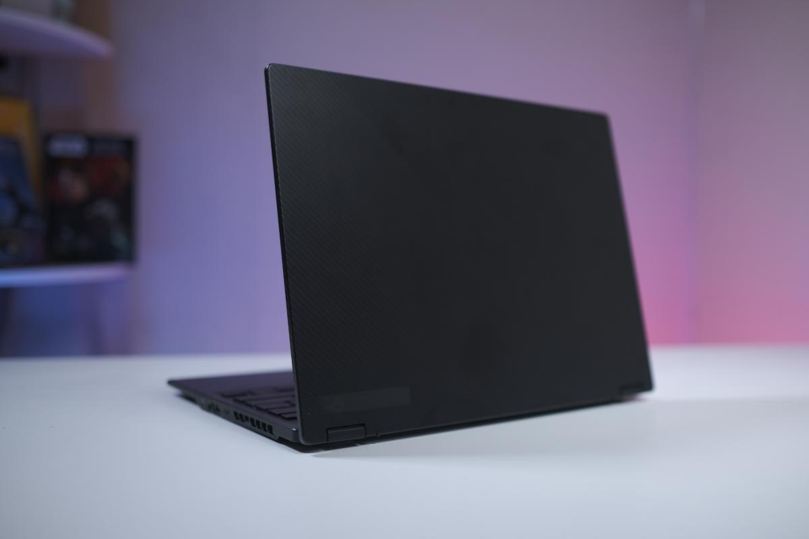
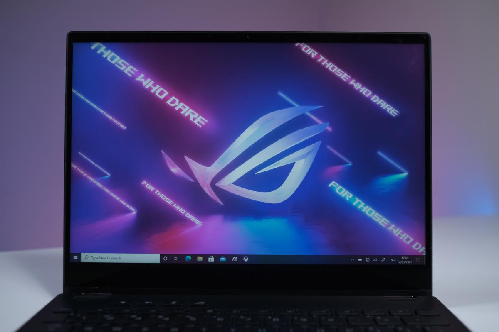
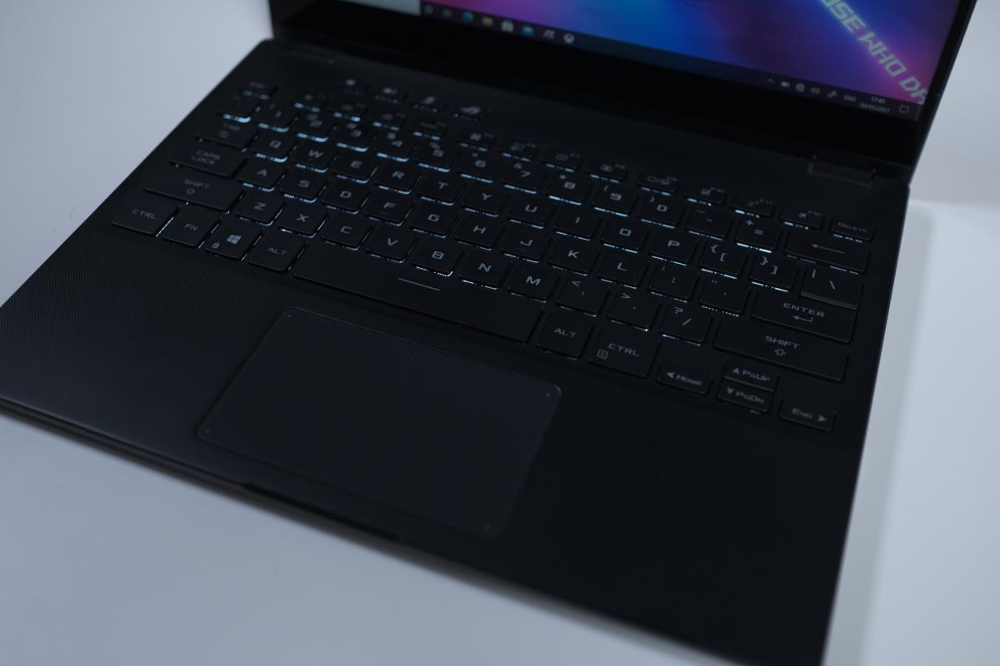

Review Asus ROG Flow X13

Desain ASUS ROG Flow X13
Laptop gaming ini berhasil membuat kami kagum dengan desainnya yang sangat ringkas. Panel layar yang dibawanya berukuran 13.4 inci. Cukup jarang kami menemukan laptop gaming seringkas ini. Pasalnya, kebanyakan laptop gaming saat ini membawa panel layar 15 inci.
Bobotnya juga ringan untuk sebuah laptop gaming. Ketebalan bodinya sekitar 15,7 mm dengan bobot hanya sekitar 1,3 Kg. Dengan dimensinya tersebut ASUS ROG Flow X13 sangat hemat tempat di dalam tas dan ideal diajak bermobilitas.
Bodinya yang serba hitam terlihat premium dengan tekstur garis-garis di seluruh bodinya. Desainnya sangat minimalis tanpa menonjolkan aura gaming yang terlalu mencolok. Ini menjadikannya juga sangat cocok untuk para profesional sebagai teman kerja.
Bodinya yang ramping tidak membawa banyak port konektivitas. Di sisi kiri bodi terdapat port ROG XG Mobile interface yang terdiri dari port PCIe 3.0 x8 dan port USB Type-C 3.2 Gen 2, HDMI 2.0b dan jack audio 3.5mm. Di sisi kanan bodi sejajar dengan tombol power tersedia satu port USB Type-C 3.2 Gen 2 dan satu port USB 3.2 Gen 2 Type-A. Kabar baiknya, dua port USB Type-C 3.2 Gen 2 yang dibawanya mendukung Power Delivery untuk isi ulang baterai dan fungsi Display Port.

Layar ASUS ROG Flow X13
ASUS ROG Flow X13 membawa layar IPS sentuh 13.4 inci yang resolusinya 4K. Respon layarnya dengan sentuhan jari amat baik. Layarnya ini juga mendukung input pena stylus. Dengan rasio aspek 16:10 layarnya terlihat lebih lebar jika dibandingkan laptop 13 inci lain. Engsel layarnya yang bisa diputar 360 derajat juga kokoh. Melipat layarnya ke mode tablet juga bisa dilakukan dengan sangat mudah. Tambahan lain layarnya ini telah diperkuat dengan lapisan Corning Gorilla Glass.
Keunggulan lain panel layarnya juga sangat akurat. Akurasi warnanya telah mendukung cakupan warna sRGB 116% dan DCI-P3 85%. Akurasi warnanya pun telah berhasil mengantongi standar Pantone Validated. Jadi, sangat ideal untuk mendukung kegiatan penciptaan konten seperti penyuntingan foto dan video. Satu yang kurang dari panel layarnya hanyalah refresh rate. Untuk model 4K ini refresh rate yang didukungnya hanya 60 Hz. Bagi yang mengincar refresh rate lebih tinggi ASUS menyediakan opsi dengan panel 120 Hz. Tapi, resolusi layarnya lebih rendah yakni 1920 x 1200 pixel.

Keyboard ASUS ROG Flow X13
Bergeser ke area keyboard ROG Flow X13 membawa keyboard bergaya chiclet. Keyboardnya ini telah dilengkapi dengan lampu backlit berwarna putih untuk mendukung penggunaan di kondisi temaram. Ada tiga tingkatan kecerahan lampu backlit yang bisa dipilih sesuai dengan kebutuhan.
Keyboard yang dibawanya ini tergolong nyaman digunakan untuk mengetik atau bermain game meski jarak antar tombol relatif berdekatan. Di bagian atas ASUS juga menambahkan empat tombol pintas tambahan untuk pengaturan volume, mikrofon dan ROG Armoury Crate. Untuk area touchpad ukuran touchpad yang dibawanya relatif besar. Touchpad tersebut juga sangat responsif dengan sapuan jari.
ASUS ROG Flow X13 cocok untuk:
Gamer yang mobilitasnya tinggi: Dengan dimensi yang sangat ringkas laptop ini akan sangat mudah dibawa berpergian.
Konten kreator: Panel layar akurat, didukung layar sentuhan dan konvertibel menjadikannya ideal untuk penciptaan konten.
Para pekerja/profesional yang masih gemar bermain game: Desainnya yang minimalis bisa diandalkan sebagai teman bekerja dan bermain game.
Keyboard yang dibawanya ini tergolong nyaman digunakan untuk mengetik atau bermain game meski jarak antar tombol relatif berdekatan. Di bagian atas ASUS juga menambahkan empat tombol pintas tambahan untuk pengaturan volume, mikrofon dan ROG Armoury Crate. Untuk area touchpad ukuran touchpad yang dibawanya relatif besar. Touchpad tersebut juga sangat responsif dengan sapuan jari.
Kelebihan ASUS ROG Flow X13:
- Desain konvertibel
- Panel layar 4K dengan warna akurat
- Layar sentuh mendukung input pena stylus
- Performa bertenaga
- Didukung eGPU ROG XG Mobile
- Keyboard nyaman digunakan
- Armory Crate menawarkan opsi pengaturan yang komplit
Kekurangan ASUS ROG Flow X13:
- Kipas pendingin agak bising di mode Turbo
- Tidak dilengkapi slot pembaca kartu memori SD
- RAM onboard tidak bisa diupgrade
|